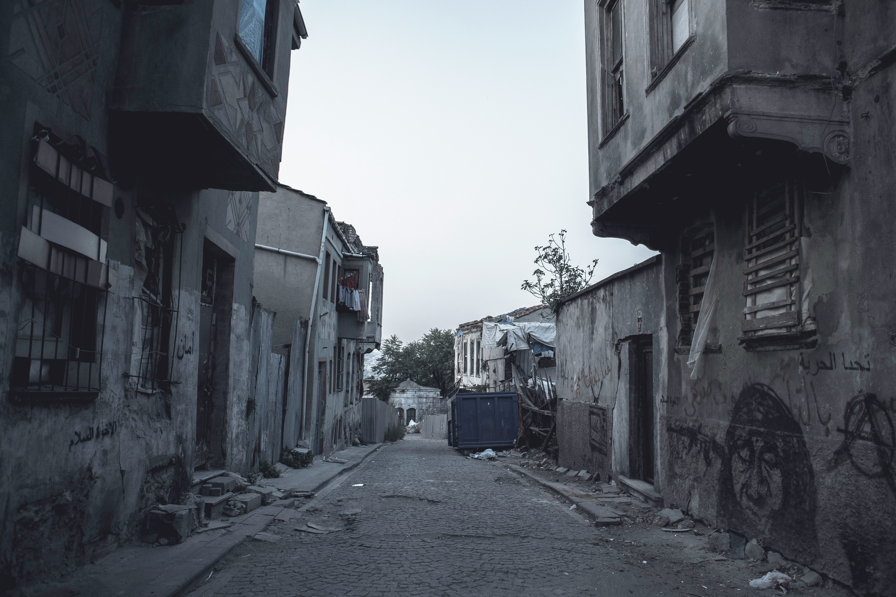
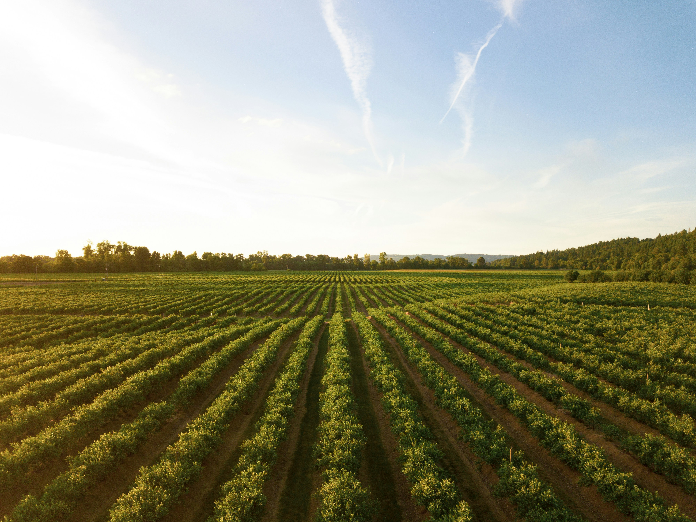

O Brasil ser um país com forte cultura interiorana não é novidade para ninguém, mas... por que isso? No sso país por muito tempo foi colônia portuguesa, exploração dos recursos naturais e a atividade campeira eram predominantes e seus resultados eram quase totalmente levados a Portugal. Mesmo com a Revolução Industrial começando na segunda metade do século XVII, os investimentos industriais na região do atual país eram baixíssimas e mesmo após a independência, muito limitados pelas oligarquias. O pouco investimento urbano resultou em um forte predomínio rural, onde o chamado "povão", geralmente, se localizava. Uma das maiores mazelas da história do país foi o abrupto processo de urbanização no início do século XX, que por mal planejamento, levou a formação das grandes periferias.

O sertanejo é um estilo musical interiorano que fez muito sucesso por contar a trajetória em histórias engraçadas, dramáticas ou até românticas do cotidiano na roça, hoje, possui ramificações com tons mais modernos, como o Sertanejo Universitário. Indo para a literatura, Monteiro Lobato criou o personagem Jeca Tatu, uma caricatura do homem rural, porém, seu personagem ganhou ainda mais notoriedade (principalmente entre o povão) com os filmes de Amácio Mazzaropi, que criava histórias cômicas baseadas no personagem. A influência do estilo de vida camponês se deu até no calendário, as festas juninas são comemorações desse estilo de vida que trazem consigo a dança tradicional, as roupas típicas e as comidas a base de milho (que são uma delícia). Já no âmbito urbano, movimentos como os do hip-hop e o grafite divulgam de forma crítica e artística a vida nas grandes cidades.
